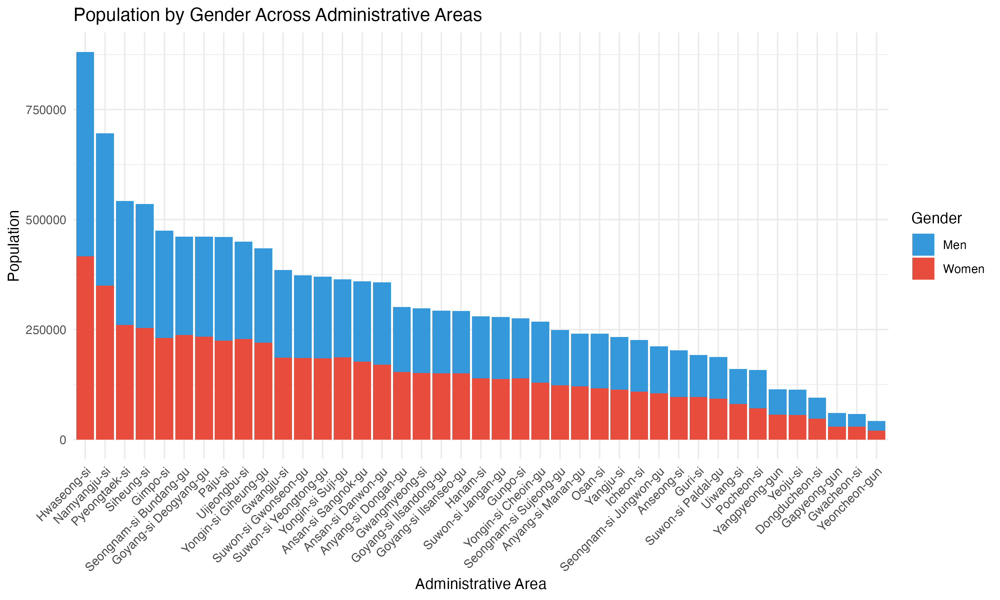

# A tibble: 41 × 7
#> adm1_code adm1_name adm2_code adm2_name pop2020_total pop2020_men pop2020_women
#> <dbl> <fct> <dbl> <chr> <int> <int> <int>
#> 1 31 Gyeonggi-do 31011 Suwon-si Jangan-gu 278507 140771 137736
#> 2 31 Gyeonggi-do 31012 Suwon-si Gwonseon-gu 373381 188046 185335
#> 3 31 Gyeonggi-do 31013 Suwon-si Paldal-gu 187922 95112 92810
#> 4 31 Gyeonggi-do 31014 Suwon-si Yeongtong-… 370340 185687 184653
#> 5 31 Gyeonggi-do 31021 Seongnam-si Sujeong… 249044 125587 123457
#> 6 31 Gyeonggi-do 31022 Seongnam-si Jungwon… 211880 106618 105262
library(ggplot2)
library(tidyr)
library(dplyr)
# Reshape data from wide to long format
df_long <- df %>%
pivot_longer(cols = c(pop2020_men, pop2020_women),
names_to = "gender",
values_to = "population") %>%
mutate(gender = case_when(
gender == "pop2020_men" ~ "Men",
gender == "pop2020_women" ~ "Women"
))
# Create stacked bar chart
ggplot(df_long, aes(x = adm2_name, y = population, fill = gender)) +
geom_col() +
labs(title = "Population by Gender Across Administrative Areas",
x = "Administrative Area",
y = "Population",
fill = "Gender") +
theme_minimal() +
theme(axis.text.x = element_text(angle = 45, hjust = 1)) +
scale_fill_manual(values = c("Men" = "#3498db", "Women" = "#e74c3c"))
Understanding Sido → Sigungu → Eupmyeondong relationships
Aggregating Eupmyeondong data to Sigungu level Handling administrative
boundary changes